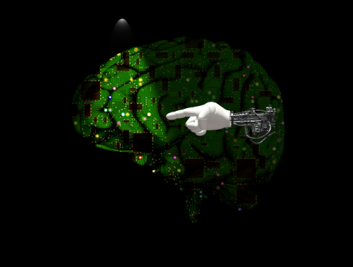

Media
The Brief History of Artificial Intelligence
| 1842 | Programmable mechanical calculating machine (Calculator) |
| 1950 | Turing Test |
| 1956 | First Artificial Intelligence Conference |
| 1957 | General Problem Solver |
| 1961 | Industrial Robot |
| 1965 | ELIZA & The First Expert System |
| 1968 | MacHack |
| 1979 | Knowledge-based medical diagnosis program |
| 1980s | Commercial expert system |
| 1993 | Polly: Behavior-based Robotics |
| 2005 | Recommendation Technology |
| 2011 | Mobile Recommendation Apps: Siri, Now, Cortana |
| 2013 - | Machine Learning, Deep Learning |

The brain of Artificial Intelligence is only slightly lit, but as we progress the light will grow.